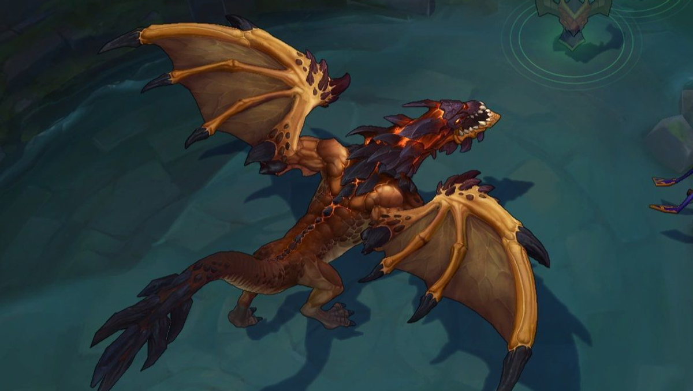
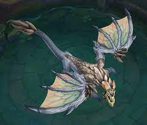
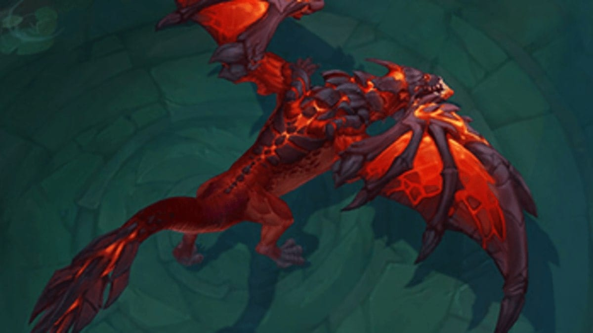
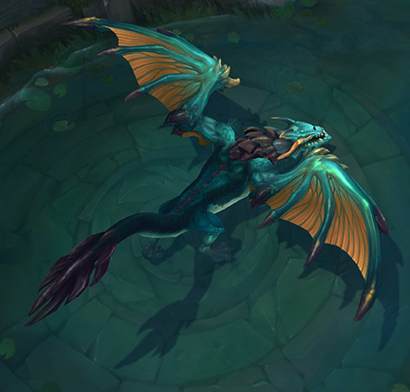

Dragão da Montanha
Concede 6% do máximo de pontos de vida como escudo após 5 segundos sem receber dano.
Em sua forma Anciã, Concede 9% do máximo de pontos de vida como escudo após 5 segundos sem receber dano.
Dragão da Nuvem
Concede velocidade de movimento de bônus de 7,5%, dobrada para 15% quando fora de combate.
Em sua forma Anciã, Concede velocidade de movimento bônus de 11,25%, dobrado para 22,5% quando fora de combate.
Dragão Infernal
Concede 8% a mais de dano.
Em sua forma Anciã, Concede 12% a mais de dano.
Dragão do Oceano
Concede 8% de Vampirismo Físico e Vampirismo Mágico.
Em sua forma Anciã, Concede 12% de Vamp Físico e Vamp Mágico.